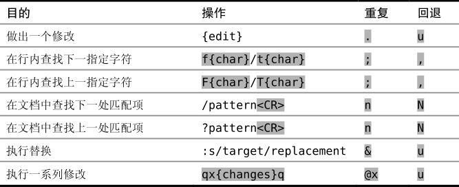

技巧4执行、重复、回退
在面对重复性工作时，我们需要让移动动作和修改都能够重复，这样就可以达到一个最佳编辑模式。Vim对此的支持是：它会记住我们的操作，并使最常用的操作触 手可及，所以我们可以很方便地重复执行它们。本节将介绍 Vim 可以重复执行的每个操作，并学习如何回退这些命令。
我们已经看到 . 命令会重复上次修改。由于很多操作都被当成一次修改，因此 .命令已经证明了它的神通广大。但有些命令能以其他的方式重复。例如，@: 可以用来重复任意Ex命令（在技巧31中讨论），或者我们也可以输入 &（参见技巧92）来重复上次的:substitute命令（它本身也是一条Ex命令）。
如果我们知道如何重复之前的操作，而无需每次都输入整条命令，那么我们就会获得更高的效率。我们可以先执行一次，随后只需重复即可。
然而，这么少的按键就可以完成这么多的事情，这也可能会带来麻烦。我们需要很小心地操作才行，不然就很容易出错。当一遍又一遍地连续按 j.j.j. 时，那种感觉就像是在敲鼓。可是，如果不小心在一行上敲了两次 j 键，会发生什么？或是更糟，敲了两次 . 键？
当Vim让一个操作或移动可以很方便地重复时，它总是会提供某种方式，让我们在不小心做过头时能回退回来。对 . 命令而言，我们永远可以按 u 键撤销上次的修改。如果在使用 f{char} 命令后，不小心按了太多次 ; 键，就会偏离我们的目标。不过我们可以再按 , 键跳回去，这个命令会反方向查找上次f{char}所查找的字符（参见技巧49）。
在你不小心做过头时，知道怎么回退会很有帮助。表1-1总结了Vim中可重复执行的命令，以及相应的回退方式。在多数场景中，撤销（undo）都是我们想要使用的命令，难怪我键盘上的 u 键磨损得这么厉害！
表 1-1 可重复的操作及如何回退
